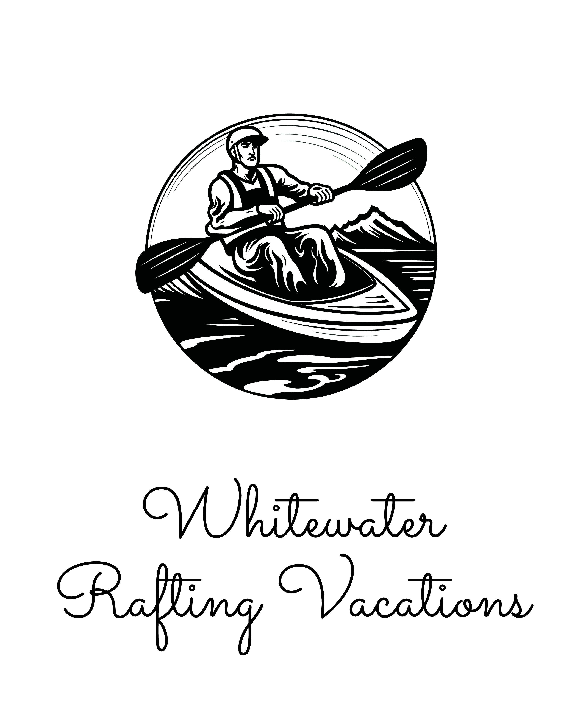

<html lang="en-us"></html>

<head>
  <meta charset="utf-8" />
  <title>Site Plan</title>
  <link type="text/css" rel="stylesheet" href="styles/site-plan-rafting.css" />
</head>

<body>
  <header>
    <h1>Motyv8 Site Plan</h1>
    <h2>Gabriel Wargha</h2>
    <h2>WDD 130-02</h2>
    <!-- In the header above, add the name of your site, your name and class number. For example if you are in section 3 you would put WDD 130-03 -->
  </header>
  <main>
    <!-- ------------------------Steps 2-5------------------------------ -->
    <hr />
    <h2>Overview</h2>
    <h3>Purpose</h3>
    <p>At MOTYV8 we have blended the most cutting edge technology and behavioral science into one single platform to help unlock your player's potential by building mental strength, transform your team's culture by building connection, and align your team by getting them organized. All this to ensure your team can perform their best in those critical moments when the lights go on and the competition heats up. </p>
    <!-- change this -->

    <h3>Audience</h3>
    <p>Elevate your team's performance and unlock their mental edge with our comprehensive mental training solution. We make it easy for you to bring mental toughness into your training regimen. Our program is tailored specifically to enhance your players mental game, helping them develop confidence, focus, motivation, resilience, and grit. Our courses are delivered right to their mobile devices making it easy to put mental strength right in their hands. </p>
    <!-- change this -->

    <hr />
    <h2>Branding</h2>
    <h3>Website Logo</h3>
    <!-- Replace this with some sort of logo for your site.  A logo can be as simple as the name of your site in a nice font :) -->
    
    <hr />
    <h2>Style Guide</h2>

    <!-- ------------------------Steps 6-9------------------------------ -->

    <h3>Color Palette</h3>
    <!--  The colors you choose for a website are one of the most important decisions you will make. You should have at least 2 colors but do not have to fill in all 4 if you do not need them.  -->
    
    <table class="colors">
      <tr>
        <th>Primary</th>
        <th>Secondary</th>
        <th>Accent 1</th>
        <th>Accent 2</th>
      </tr>
      
      <tr>
        <td class="primary"></td>
        <td class="secondary"></td>
        <td class="accent1"></td>
        <td class="accent2"></td>
      </tr>
    </table>

    <!-- ------------------------Steps 10-12------------------------------ -->

    <h3>Typography</h3>
    <!-- Choose a font for your paragraphs (body copy) and headlines. What font(s) have you chosen? Think also about which of your colors above you might use for background and font colors. -->

    <h4>
      Heading Font: Roboto
      <!-- change this -->
    </h4>
    <h4>
      Paragraph Font: OpenSans 
      <!-- change this -->
    </h4>
    <h3>Normal paragraph example</h3>
    <p>
      Your players will no longer have an excuse for missing the bus, or not seeing a change to the schedule. Say goodbye to the chaos of multiple platforms and disorganized schedules and communication mishaps with our full suite of team organization tools. Seamlessly run multiple teams, adjust rosters, manage calendars, and communicate effectively to ensure that all of your players are on the same page. Your players will perform better when it is easy for them to know where they are supposed to be.
    </p>
    <h3>Colored paragraph example</h3>
    <p class="colored">
      We know that the team with the most talent does not always win, and that teams with high chemistry win more often. Trust is a critical component to achieving high team chemistry. Recognizing and celebrating each other is the best and fastest way to build trust between players and coaches. Our platform recruits your entire team to participate in the celebration of each others success, making building team culture effortless for you as the coach. 
    </p>

    <!-- ------------------------Step 13------------------------------ -->

    <h3>Navigation with Hover</h3>
    <!-- Think about how you want your navigation bar to look. In the site-plan.css file change the colors to your colors to get the look you desire. -->
    <nav>
      <a href="#">Home</a>
      <a href="#">Page2</a>
      <a href="#">Contact Us</a>
    </nav>
    <hr />
    <h2>Site Map</h2>
    <div class="sitemap">
      <div class="sm-home">Home</div>
      <div class="sm-page2">
        [Page2]
        <!-- this page will have a name later -->
      </div>
      <div class="sm-page3">Contact Us</div>

      <div class="top">&nbsp;</div>
      <div class="left">&nbsp;</div>
      <div class="right">&nbsp;</div>
    </div>
    <hr />
    <h2>Wireframes</h2>
    <!-- Create an additional wireframe for your site. List it here below the Home page wireframe. -->

    <h3>Home</h3>

    

    <h3>[Page 2]</h3>

    <!--  -->
  </main>
</body>

</html>